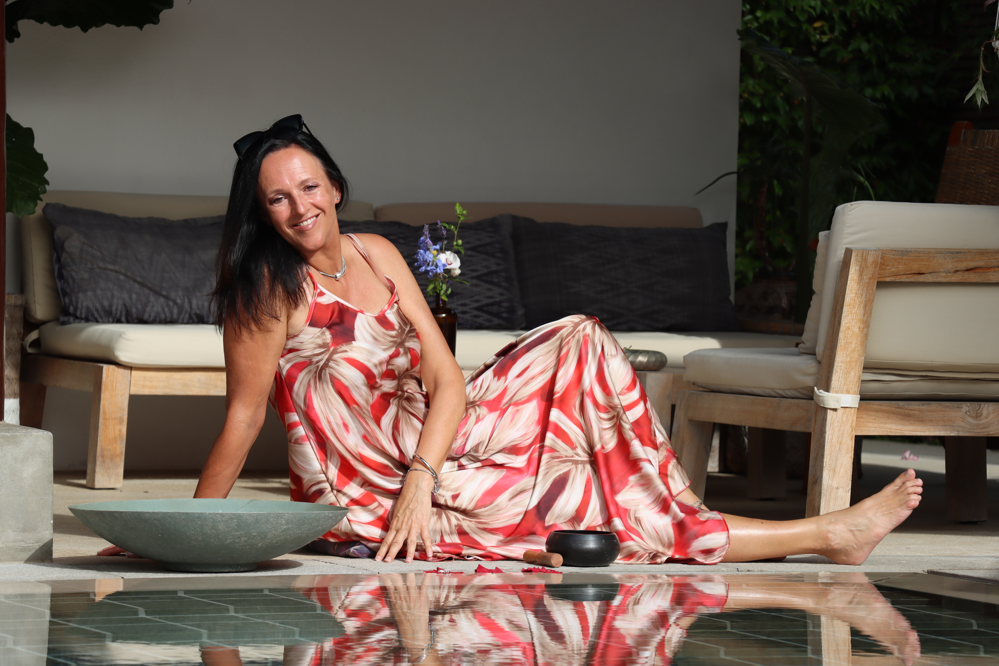

FLAGSHIP — AVTORSKI
Retreat · 27.–31. maj 2026 · KRK
Zavestni Kreator
Pet dni globoke preobrazbe. Petnajst oseb. Ena arhitektura.
O retreatu
Deset let sinteze v pet dni.
Zavestni Kreator je Tanjin avtorski program, ki združuje nevroznanost spremembe, srčno koherenco in metodologijo zavestnega ustvarjanja v en celovit petdnevni proces.
Retreat je zasnovan za posameznike, ki so pripravljeni preseči reaktivne vzorce in iz notranje usklajenosti ustvarjati življenje, ki je v skladu z njihovim najgloblji namenom. Ne gre za tehnike — gre za identitetno preobrazbo.
Butični format do 15 udeležencev zagotavlja globino dela, ki ni mogoča v večjih skupinah. Vsak udeleženec dobi individualno pozornost in prostor za lastni proces.
Kaj je vključeno
- 5 polnih dni vodenih praks in procesov
- Jutranje koherenčne meditacije
- Štirje arhetipi — celodnevni procesi
- Identitetna preobrazba: kdo ste brez starih vzorcev
- Tehniki srčne koherence (HeartMath)
- Mentalna vadba (NeuroChange Solutions)
- Individualni srečanja s Tanjo
- Nastanitev v resortu OSMA (4 noči)
- Vse obroke in osvežitve
- 30-dnevna online skupinska podpora po retreatu
- Gradiva in priročnik Zavestni Kreator
Oris programa
Prihod in namestitev. Uvodni krog: kdo ste in zakaj ste tu. Zastavitev namena za five dni. Prva koherenčna praksa pred spanjem.
Vsak dan naslavlja en arhetip. Jutranjo koherenčna praksa, celodnevni procesi, zaključni integrativni krog. Posamezni pogovori s Tanjo.
Zaključni procesi. Postavljanje namere za 30 dni po retreatu. Skupna jutranja meditacija ob morju. Odhod po kosilu.
Teme in tehnike
Lokacija: Resort OSMA, Krk

Resort OSMA na otoku Krk ponuja butično okolje z neposrednim dostopom do morja. Zasebni bazeni, mirno okolje in mediteranska arhitektura ustvarjajo idealne pogoje za globoko preobrazbo.
Pogosta vprašanja
Za posameznike, ki so pripravljeni na globoko osebno preobrazbo. Ni predznanja potrebnega. Primeren je tako za tiste, ki se prvič srečujejo s tovrstnim delom, kot za izkušene praktike, ki iščejo naslednji korak.
Nastanitev (4 noči v resortu OSMA), vsi obroki in osvežitve med programom, gradiva in priročnik, 30-dnevna online podpora po retreatu. Prevoz ni vključen.
Retreat je omejen na 15 udeležencev. Za aktualno razpoložljivost nas kontaktirajte.
Odpoved do 60 dni pred retreatom: celotno povračilo minus administrativni stroški (50 €). Odpoved 30–60 dni: 50% povračilo. Manj kot 30 dni: ni povračila, možno prenesenje na naslednji termin.
Zavestni Kreator
27.–31. maj 2026 · KRK
+ DDV · nastanitev vključena
Omejeno na 15 udeležencev
Voditeljica
Tanja vodi z izkušnjo, ne le z znanjem.
Tanja je sama prešla pot, ki jo vodi udeležence. Zavestni Kreator ni le metodologija — je Tanjino lastno živeto spoznanje, distilirano v pet dni intenzivne prakse.
Spoznajte Tanjo →